Delivering International User Experiences[WMV] [2008/03/07]Please use this page for all questions and comments related to this session. Visit http://sessions.visitmix.com for session recordings as they become available.Delivering International User…
The Story of the Ribbon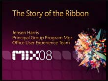[WMV] [2008/03/07]Please use this page for all questions and comments related to this session. Visit http://sessions.visitmix.com for session recordings as they become available.The Story of the RibbonSpeakers: Jensen…
Beneath the Surface: The Natural Experience Vision[WMV] [2008/03/07]Please use this page for all questions and comments related to this session. Visit http://sessions.visitmix.com for session recordings as they become available.Beneath the Surface: The Natural…
Creating Better User Experiences: Design Methods[WMV] [2008/03/07]Please use this page for all questions and comments related to this session. Visit http://sessions.visitmix.com for session recordings as they become available.Creating Better User Experiences: Design…
Creating Better User Experiences: Information Architecture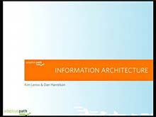[WMV] [2008/03/07]Please use this page for all questions and comments related to this session. Visit http://sessions.visitmix.com for session recordings as they become available.Creating Better User Experiences:…
Creating Better User Experiences: Interaction Design[WMV] [2008/03/07]Please use this page for all questions and comments related to this session. Visit http://sessions.visitmix.com for session recordings as they become available.Creating Better User Experiences:…
Creating Better User Experiences: Design Strategy[WMV] [2008/03/07]Please use this page for all questions and comments related to this session. Visit http://sessions.visitmix.com for session recordings as they become available.Creating Better User Experiences: Design…
The Back of the Napkin: Solving Design Problems (and Selling Your Solutions) with Pictures [WMV] [2008/03/07]
[WMV] [2008/03/07]Please use this page for all questions and comments related to this session. Visit http://sessions.visitmix.com for session recordings as they become available.The Back of the Napkin: Solving Design…
Getting Clued In to Experience Management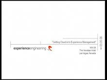[WMV] [2008/03/07]Please use this page for all questions and comments related to this session. Visit http://sessions.visitmix.com for session recordings as they become available.Getting Clued In to Experience…
Silverlight and Web Analytics[WMV] [2008/03/07]Please use this page for all questions and comments related to this session. Visit http://sessions.visitmix.com for session recordings as they become available.Silverlight and Web AnalyticsSpeakers:…
Real World Design: Working with Silverlight and WPF in the Design Studio[WMV] [2008/03/07]Please use this page for all questions and comments related to this session. Visit http://sessions.visitmix.com for session recordings as they become available.Real World Design: Working with…
Is Web 2.0 sustainable? What business models will work?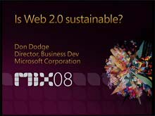[WMV] [2008/03/07]Please use this page for all questions and comments related to this session. Visit http://sessions.visitmix.com for session recordings as they become available.Is Web 2.0 sustainable? What business…
What's the Secret Formula?[WMV] [2008/03/07]Please use this page for all questions and comments related to this session. Visit http://sessions.visitmix.com for session recordings as they become available.What's the Secret Formula?Speakers: Dan…
Opportunities and Challenges in Mashing Up the Web [WMV] [2008/03/07]
[WMV] [2008/03/07]Please use this page for all questions and comments related to this session. Visit http://sessions.visitmix.com for session recordings as they become available.Opportunities and Challenges in Mashing…
E-commerce Done Right[WMV] [2008/03/07]Please use this page for all questions and comments related to this session. Visit http://sessions.visitmix.com for session recordings as they become available.E-commerce Done RightSpeakers: Gerard…
How Design Impacts the Bottom Line[WMV] [2008/03/07]Please use this page for all questions and comments related to this session. Visit http://sessions.visitmix.com for session recordings as they become available.How Design Impacts the Bottom…
Touch Me: Where Are Interfaces Going?[WMV] [2008/03/07]Please use this page for all questions and comments related to this session. Visit http://sessions.visitmix.com for session recordings as they become available.Touch Me: Where Are Interfaces…
I Wanna Go Mobile![WMV] [2008/03/07]Please use this page for all questions and comments related to this session. Visit http://sessions.visitmix.com for session recordings as they become available.I Wanna Go Mobile!Speakers: Chad Stoller…
Social Networks: Where Are They Taking Us?[WMV] [2008/03/07]Please use this page for all questions and comments related to this session. Visit http://sessions.visitmix.com for session recordings as they become available.Social Networks: Where Are They Taking…
What Is the face of the next Web?[WMV] [2008/03/07]Please use this page for all questions and comments related to this session. Visit http://sessions.visitmix.com for session recordings as they become available.What Is the face of the next…
Web 2.0 and Beyond: What Is the Business Reality?[WMV] [2008/03/07]Please use this page for all questions and comments related to this session. Visit http://sessions.visitmix.com for session recordings as they become available.Web 2.0 and Beyond: What Is the Business…
The Open Question[WMV] [2008/03/07]Please use this page for all questions and comments related to this session. Visit http://sessions.visitmix.com for session recordings as they become available.The Open QuestionSpeakers: Andi Gutmans…
Designing at the Speed of Light[WMV] [2008/03/07]Please use this page for all questions and comments related to this session. Visit http://sessions.visitmix.com for session recordings as they become available.Designing at the Speed of LightSpeakers:…
Making it Simple: Designer/Developer Workflow[WMV] [2008/03/07]Please use this page for all questions and comments related to this session. Visit http://sessions.visitmix.com for session recordings as they become available.Making it Simple: Designer/Developer…
From Long Tail to Fuzzy Tale: Why "Fuzzy" Is the New Clear[WMV] [2008/03/07]Please use this page for all questions and comments related to this session. Visit http://sessions.visitmix.com for session recordings as they become available.From Long Tail to Fuzzy Tale: Why…
MIX08 Keynote Day 2[WMV] [2008/03/06]Please use this page for all questions and comments related to this session. Visit http://sessions.visitmix.com for session recordings as they become available.Day 2 KeynoteSpeakers: Steve Ballmer,…
MIX08 Keynote Day 1[WMV] [2008/03/06]Please use this page for all questions and comments related to this session. Visit http://sessions.visitmix.com for session recordings as they become available.Day 1 KeynoteSpeakers: Ray Ozzie, Scott…
Using Microsoft Silverlight for Creating Rich Mobile User Experiences[WMV] [2008/03/06]Please use this page for all questions and comments related to this session. Visit http://sessions.visitmix.com for session recordings as they become available.Using Microsoft Silverlight for Creating…
Overview of Expression Encoder 2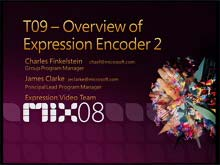[WMV] [2008/03/06]Please use this page for all questions and comments related to this session. Visit http://sessions.visitmix.com for session recordings as they become available.Overview of Expression Encoder…
Introducing SQL Server Data Services[WMV] [2008/03/06]Please use this page for all questions and comments related to this session. Visit http://sessions.visitmix.com for session recordings as they become available.Introducing SQL Server Data…
Integrating Your Site With Internet Explorer 8[WMV] [2008/03/06]Please use this page for all questions and comments related to this session. Visit http://sessions.visitmix.com for session recordings as they become available.Integrating Your Site With Internet…
Hard Rock: Behind the Music with Deep Zoom[WMV] [2008/03/06]Please use this page for all questions and comments related to this session. Visit http://sessions.visitmix.com for session recordings as they become available.Hard Rock: Behind the Music with Deep…
Welcome to Internet Explorer 8[WMV] [2008/03/06]Please use this page for all questions and comments related to this session. Visit http://sessions.visitmix.com for session recordings as they become available.Welcome to Internet Explorer 8Speakers:…
Cross-Browser Layout with Internet Explorer 8[WMV] [2008/03/06]Please use this page for all questions and comments related to this session. Visit http://sessions.visitmix.com for session recordings as they become available.Cross-Browser Layout with Internet…
Mobile Devices and Microsoft Silverlight: A Primer on the New Technology[WMV] [2008/03/06]Please use this page for all questions and comments related to this session. Visit http://sessions.visitmix.com for session recordings as they become available.Mobile Devices and Microsoft…
Developing Cutting Edge Web Applications With Internet Explorer 8[WMV] [2008/03/06]Please use this page for all questions and comments related to this session. Visit http://sessions.visitmix.com for session recordings as they become available.Developing Cutting Edge Web Applications…
Accessing Windows Live Services via AtomPub[WMV] [2008/03/03]Please use this page for all questions and comments related to this session. Visit http://sessions.visitmix.com for session recordings as they become available.Accessing Windows Live Services via…
Adding Instant Messaging to Any Site[WMV] [2008/03/03]Please use this page for all questions and comments related to this session. Visit http://sessions.visitmix.com for session recordings as they become available.Adding Instant Messaging to Any…
Developing Applications with Microsoft Virtual Earth[WMV] [2008/03/03]Please use this page for all questions and comments related to this session. Visit http://sessions.visitmix.com for session recordings as they become available.Developing Applications with Microsoft…
Developing with Windows Live[WMV] [2008/03/03]Please use this page for all questions and comments related to this session. Visit http://sessions.visitmix.com for session recordings as they become available.Developing with Windows LiveSpeakers:…
Serving Applications with Silverlight Streaming by Windows Live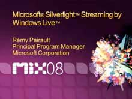[WMV] [2008/03/03]Please use this page for all questions and comments related to this session. Visit http://sessions.visitmix.com for session recordings as they become available.Serving Applications with Silverlight…
Take Your Content Mobile with Windows Mobile, Microsoft Expression, and Zumobi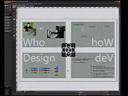[WMV] [2008/03/03]Please use this page for all questions and comments related to this session. Visit http://sessions.visitmix.com for session recordings as they become available.Take Your Content Mobile with Windows…
Virgins, Spaceships and Hob-nailed Boots![WMV] [2008/03/03]Please use this page for all questions and comments related to this session. Visit http://sessions.visitmix.com for session recordings as they become available.Virgins, Spaceships and Hob-nailed…
Understanding Microsoft Partner Programs for Designers, Developers, and Agencies[WMV] [2008/03/03]Please use this page for all questions and comments related to this session. Visit http://sessions.visitmix.com for session recordings as they become available.Understanding Microsoft Partner Programs…
Bringing Hosters and Developers Together with IIS7[WMV] [2008/03/03]Please use this page for all questions and comments related to this session. Visit http://sessions.visitmix.com for session recordings as they become available.Bringing Hosters and Developers Together…
Silverlight and Advertising[WMV] [2008/03/03]Please use this page for all questions and comments related to this session. Visit http://sessions.visitmix.com for session recordings as they become available.Silverlight and AdvertisingSpeakers:…
Integrating Media in Silverlight Applications[WMV] [2008/03/03]Please use this page for all questions and comments related to this session. Visit http://sessions.visitmix.com for session recordings as they become available.Integrating Media in Silverlight…
Encoding Video for Microsoft Silverlight Delivery Scenarios[WMV] [2008/03/03]Please use this page for all questions and comments related to this session. Visit http://sessions.visitmix.com for session recordings as they become available.Encoding Video for Microsoft Silverlight…
Anatomy of a Dynamic SharePoint Website[WMV] [2008/03/03]Please use this page for all questions and comments related to this session. Visit http://sessions.visitmix.com for session recordings as they become available.Anatomy of a Dynamic SharePoint…
Everything You Need to Know about Diagnostics and Debugging on Microsoft Internet Information Servic[WMV] [2008/03/03]Please use this page for all questions and comments related to this session. Visit http://sessions.visitmix.com for session recordings as they become available.Everything You Need to Know about…
Partying with PHP on Microsoft Internet Information Services 7[WMV] [2008/03/03]Please use this page for all questions and comments related to this session. Visit http://sessions.visitmix.com for session recordings as they become available.Partying with PHP on Microsoft Internet…
Nerd + Art: Ten Code Snippets to Empower Your Inner Artist[WMV] [2008/03/03]Please use this page for all questions and comments related to this session. Visit http://sessions.visitmix.com for session recordings as they become available.Nerd + Art: Ten Code Snippets to…
Designing Next Generation User Interface Experiences with Microsoft Expression Blend and Windows Pre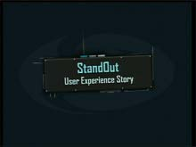[WMV] [2008/03/03]Please use this page for all questions and comments related to this session. Visit http://sessions.visitmix.com for session recordings as they become available.Designing Next Generation User Interface…
The Human Brain Relationship: Advanced and Adaptive User Interfaces[WMV] [2008/03/03]Please use this page for all questions and comments related to this session. Visit http://sessions.visitmix.com for session recordings as they become available.The Human Brain Relationship: Advanced…
Windows Presentation Foundation Using Microsoft Visual Studio 2008[WMV] [2008/03/03]Please use this page for all questions and comments related to this session. Visit http://sessions.visitmix.com for session recordings as they become available.Windows Presentation Foundation Using…
Bring Your Data to Life with Windows Presentation Foundation[WMV] [2008/03/03]Please use this page for all questions and comments related to this session. Visit http://sessions.visitmix.com for session recordings as they become available.Bring Your Data to Life with Windows…
What's New in Windows Presentation Foundation 3.5[WMV] [2008/03/03]Please use this page for all questions and comments related to this session. Visit http://sessions.visitmix.com for session recordings as they become available.What's New in Windows Presentation…
Applications = Designers + Developers[WMV] [2008/03/03]Please use this page for all questions and comments related to this session. Visit http://sessions.visitmix.com for session recordings as they become available.Applications = Designers +…
Exploring Moonlight: Novell's Implementation of Silverlight on Linux [WMV] [2008/03/03]
[WMV] [2008/03/03]Please use this page for all questions and comments related to this session. Visit http://sessions.visitmix.com for session recordings as they become available.Exploring Moonlight: Novell's…
Internationalizing XAML Applications in Windows Presentation Foundation and Microsoft Silverlight[WMV] [2008/03/03]Please use this page for all questions and comments related to this session. Visit http://sessions.visitmix.com for session recordings as they become available.Internationalizing XAML Applications in…
Creating Rich, Dynamic User Interfaces with Silverlight 2[WMV] [2008/03/03]Please use this page for all questions and comments related to this session. Visit http://sessions.visitmix.com for session recordings as they become available.Creating Rich, Dynamic User Interfaces…
Effective User Interfaces in Windows Presentation Foundation and Microsoft Silverlight [WMV] [2008/03/03]
[WMV] [2008/03/03]Please use this page for all questions and comments related to this session. Visit http://sessions.visitmix.com for session recordings as they become available.Effective User Interfaces in Windows…
Building AOL's High Performance, Enterprise Wide Mail Application With Silverlight 2[WMV] [2008/03/03]Please use this page for all questions and comments related to this session.Building AOL's High Performance, Enterprise Wide Mail Application With Silverlight 2Speakers: Eric Hoffman (Director of Rich…
Silverlight on a LAMP Site for Media: UVNTV.com[WMV] [2008/03/03]Please use this page for all questions and comments related to this session. Visit http://sessions.visitmix.com for session recordings as they become available.Silverlight on a LAMP Site for Media:…
Silverlight as a Gaming Platform[WMV] [2008/03/03]Please use this page for all questions and comments related to this session. Visit http://sessions.visitmix.com for session recordings as they become available.Silverlight as a Gaming…
From Flash to Silverlight: A Rosetta Stone [WMV] [2008/03/03]
[WMV] [2008/03/03]Please use this page for all questions and comments related to this session. Visit http://sessions.visitmix.com for session recordings as they become available.From Flash to Silverlight: A Rosetta…
The Business of Microsoft Silverlight[WMV] [2008/03/03]Please use this page for all questions and comments related to this session. Visit http://sessions.visitmix.com for session recordings as they become available.The Business of Microsoft…
Lighting Up Your AJAX Applications with Silverlight[WMV] [2008/03/03]Please use this page for all questions and comments related to this session. Visit http://sessions.visitmix.com for session recordings as they become available.Lighting Up Your AJAX Applications with…
Building Rich Internet Applications Using Microsoft Silverlight 2, Part 2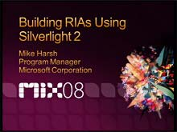[WMV] [2008/03/03]Please use this page for all questions and comments related to this session. Visit http://sessions.visitmix.com for session recordings as they become available.Building Rich Internet Applications…
Building Rich Internet Applications Using Microsoft Silverlight 2, Part 1[WMV] [2008/03/03]Please use this page for all questions and comments related to this session. Visit http://sessions.visitmix.com for session recordings as they become available.Building Rich Internet Applications…
Microsoft Expression Web: From Comp, to CSS, to Code!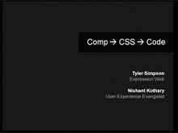[WMV] [2008/03/03]Please use this page for all questions and comments related to this session. Visit http://sessions.visitmix.com for session recordings as they become available.Microsoft Expression Web: From Comp, to…
Unlocking the Creative Genome - XAML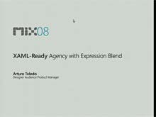[WMV] [2008/03/03]Please use this page for all questions and comments related to this session. Visit http://sessions.visitmix.com for session recordings as they become available.Unlocking the Creative Genome -…
Microsoft Silverlight and Dynamic Languages[WMV] [2008/03/03]Please use this page for all questions and comments related to this session. Visit http://sessions.visitmix.com for session recordings as they become available.Microsoft Silverlight and Dynamic…
Real-World AJAX with ASP.NET[WMV] [2008/03/03]Please use this page for all questions and comments related to this session. Visit http://sessions.visitmix.com for session recordings as they become available.Real-World AJAX with ASP.NETSpeakers:…
Building Great AJAX Applications from Scratch Using ASP.NET 3.5 and Visual Studio 2008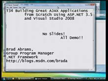[WMV] [2008/03/03]Please use this page for all questions and comments related to this session. Visit http://sessions.visitmix.com for session recordings as they become available.Building Great AJAX Applications from…
Developing Data Driven Applications Using ASP.NET Dynamic Data Controls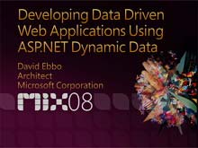[WMV] [2008/03/03]Please use this page for all questions and comments related to this session. Visit http://sessions.visitmix.com for session recordings as they become available.Developing Data Driven Applications…
Developing ASP.NET Applications Using the Model View Controller Pattern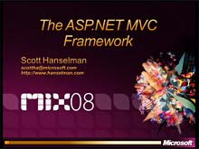[WMV] [2008/03/03]Please use this page for all questions and comments related to this session. Visit http://sessions.visitmix.com for session recordings as they become available.Developing ASP.NET Applications Using…
Building RESTful Real World Applications with the ADO.NET Data Services Framework[WMV] [2008/03/03]Please use this page for all questions and comments related to this session. Visit http://sessions.visitmix.com for session recordings as they become available.Building RESTful Real World Applications…
Using the Microsoft Sync Framework and FeedSync [WMV] [2008/03/03]
[WMV] [2008/03/03]Please use this page for all questions and comments related to this session. Visit http://sessions.visitmix.com for session recordings as they become available.Using the Microsoft Sync Framework and…
RESTful Data Services with the ADO.NET Data Services Framework [WMV] [2008/03/03]
[WMV] [2008/03/03]Please use this page for all questions and comments related to this session. Visit http://sessions.visitmix.com for session recordings as they become available.RESTful Data Services with the ADO.NET…
Creating a RESTful API with Windows Communication Foundation[WMV] [2008/03/03]Please use this page for all questions and comments related to this session. Visit http://sessions.visitmix.com for session recordings as they become available.Creating a RESTful API with Windows…
Using an Internet Service Bus to Build Next Generation Applications and Services[WMV] [2008/03/03]Please use this page for all questions and comments related to this session. Visit http://sessions.visitmix.com for session recordings as they become available.Using an Internet Service Bus to Build…
Building Applications and Services with .NET Framework 3.5[WMV] [2008/03/03]Please use this page for all questions and comments related to this session. Visit http://sessions.visitmix.com for session recordings as they become available.Building Applications and Services with…
Working with Data and Web Services in Microsoft Silverlight 2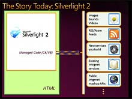[WMV] [2008/03/03]Please use this page for all questions and comments related to this session. Visit http://sessions.visitmix.com for session recordings as they become available.Working with Data and Web Services in…
Advanced Search Engine Optimization: Generating More Site Traffic from Search[WMV] [2008/03/03]Please use this page for all questions and comments related to this session. Visit http://sessions.visitmix.com for session recordings as they become available.Advanced Search Engine Optimization:…
Tools and Applications for Publishers[WMV] [2008/03/03]Please use this page for all questions and comments related to this session. Visit http://sessions.visitmix.com for session recordings as they become available.Tools and Applications for…
Overview of Microsoft Ad Formats[WMV] [2008/03/03]Please use this page for all questions and comments related to this session. Visit http://sessions.visitmix.com for session recordings as they become available.Overview of Microsoft Ad…
Monetization 101[WMV] [2008/03/03]Please use this page for all questions and comments related to this session. Visit http://sessions.visitmix.com for session recordings as they become available.Monetization 101Speakers: Erynn…
Future of Advertising Technology[WMV] [2008/03/03]Please use this page for all questions and comments related to this session. Visit http://sessions.visitmix.com for session recordings as they become available.Future of Advertising…